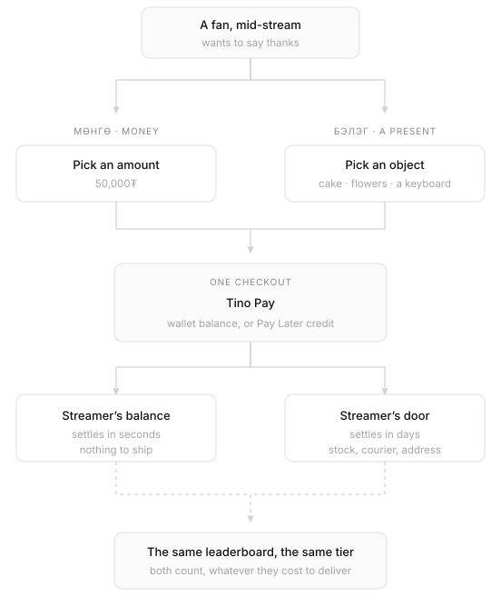
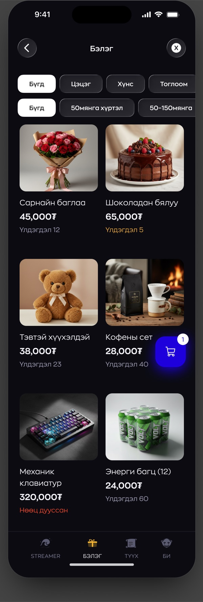
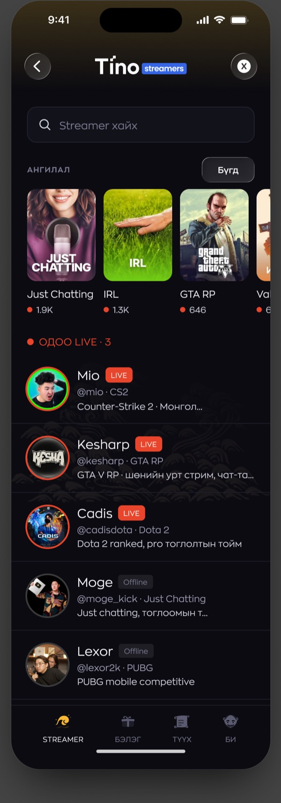
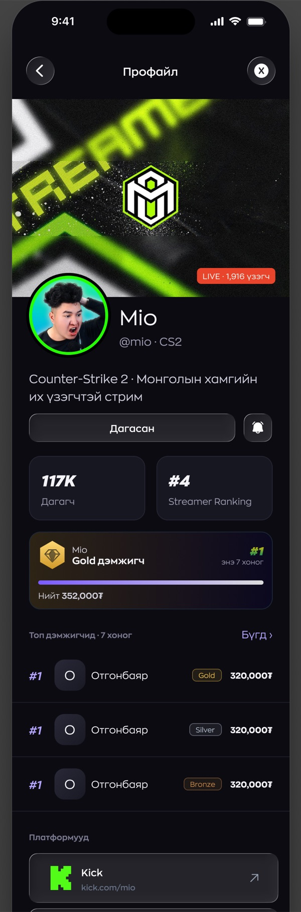
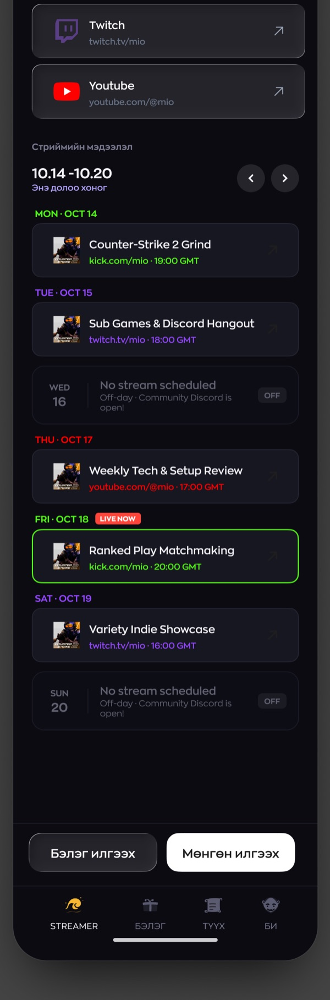
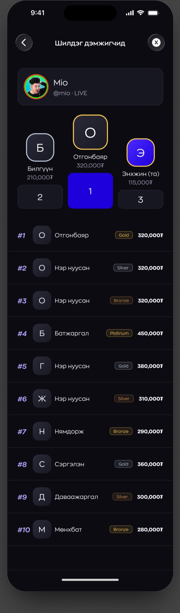
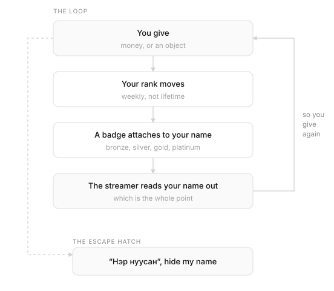
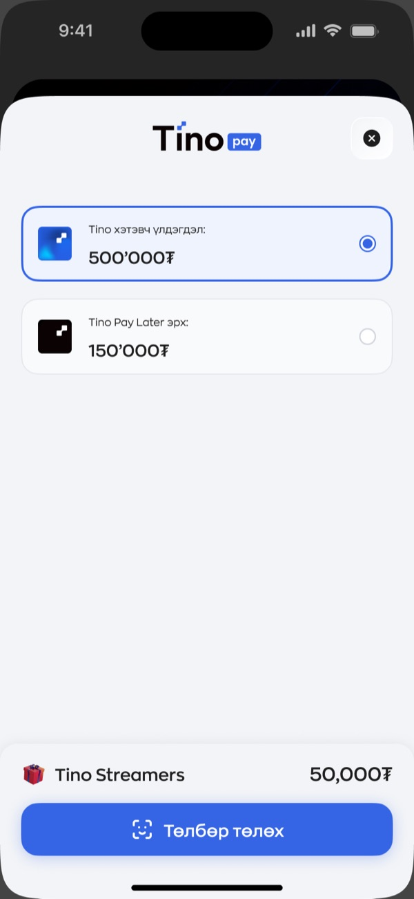
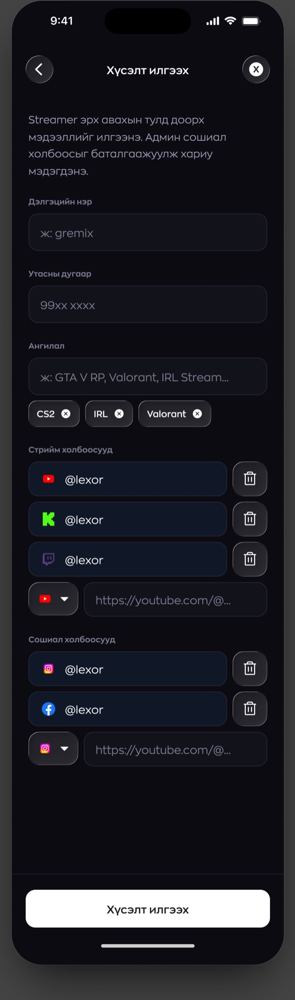

Tino Streamers
2026
Tino already knew how to move money, and it already knew how to get a parcel across Ulaanbaatar. Tino Streamers points both of those at one person, whoever you happen to be watching right now. You can send them 50,000₮, or you can send them a chocolate cake. Same checkout either way. Very different journey after that.1
Two ways to give
Most donation features are a text field and a button. This one has a second half that was much harder for me to build. An actual catalogue of actual objects.
You can send money, which lands in the streamer’s Tino balance within seconds. Or you can send a thing. A bouquet, a cake, a mechanical keyboard, a tray of energy drinks. That one turns up at their door a few days later, carried by the same couriers Tino already has out on the road.
Both start in the same place and go through the same checkout. After that they stop having anything in common. Money is a number moving between two accounts. A present has stock, a cart, a courier, an address, and about a dozen ways to go wrong that a number never has.

The catalogue is where the idea stops being a slide and turns into a shelf. The filters are category first, flowers and food and toys, then price. Every card shows how many are left, and the wording shifts as that number drops: a plain count at twelve, amber at five, red once it’s gone.2 Watching a gift sell out while you’re still deciding is its own kind of pressure, and I didn’t try to hide that.

Finding someone to give to
Discovery had an awkward job here, because most people arrive already knowing exactly whose name they’re looking for. So search sits at the top, and nothing else competes with it.
Everything under it is for the other visitor, the one who’s just browsing. The category rail carries live viewer counts, which turns it into a map of what the country is watching tonight. Below that, one list. Live streamers first, each row carrying the handle, the game, and whatever the stream happens to be called right now.
Offline streamers stay in that list. Taking them out would have looked tidier and it would have been the wrong call. If you want to send someone a gift on a Tuesday afternoon, you shouldn’t have to wait for them to go live before the app lets you.

What a profile has to do
The profile is four screens wearing a trench coat.
It has to introduce a streamer to someone who has never seen them, so there’s a banner, a handle, a bio, the game they’re known for. It has to prove they’re real, which is what the links out to Kick, Twitch and YouTube are doing. It has to show you where you personally stand, hence the tier, the progress bar and the exact amount still owing to the next rung. And it has to answer the one question every fan has. When are you next on?


The schedule is the part I kept going back to. A week at a time, times in GMT, and the empty days drawn just as carefully as the full ones. “No stream scheduled, Discord still open” tells you something. A blank space in a list doesn’t.
Rank, and the switch that turns it off
Underneath all of this sits a ladder. You give, your position moves, and you pick up a badge: bronze, silver, gold, platinum. From then on that badge follows your name everywhere it shows up.

Two decisions I made shaped how it behaves. The board runs weekly rather than lifetime, because a lifetime board hands the podium to the same three people forever and leaves everybody else quietly competing for fourth.3 A week is short enough that turning up on a Monday still counts for something.
The other decision is that I let you switch the whole thing off. Нэр нуусан, hide my name. Your money still lands, your rank still counts, your name never appears.
A public ladder motivates the people it motivates and stops everyone else cold. In a country of three million, “everyone can see what I spent” is a genuine reason not to spend.

Paying with money you don’t have yet
Checkout is the one moment where the feature takes off its own clothes and puts on Tino’s. The sheet is Tino Pay, unchanged. Light, plain, the same one you’d use to pay for a ride.
That was deliberate. Everything up to this point is entertainment. This part is money, and money should look like the rest of the bank.

The second option is the one worth sitting with. It means you can donate on credit. Tino Pay already offers Pay Later everywhere else in the app, so I put the limit in plain sight, next to the real balance, with the amount you are about to spend on the same screen. I could have buried it one tap deeper. It would have converted better there.4
A dark room inside a light app
Tino is white and blue. Tino Streamers is almost black.
Thumbnails run at full saturation, the live rings glow, and body text drops to grey so it stops competing with people’s faces. What I was after is the feeling of walking out of a bank lobby into a room where something is happening.
The cost is the join between the two worlds, and it shows up in three places. The header, the tab bar, and the moment the payment sheet rises in full daylight. I kept the header as a glass layer floating over the artwork rather than a solid bar, so the first thing you meet on the way in is content instead of chrome.
Letting streamers in
Anyone can watch. Not just anyone can receive.
I made becoming a streamer a request rather than a signup. You give a display name, a phone number, the categories you play, and then the part that does the actual work, links to the accounts you already stream from. Someone on the team checks that whoever is asking for a donation button is the person behind that channel.

I gave the three outcomes a screen each, which sounds obvious and usually is not done. Plenty of products design the approval properly and then hand the rejection to a generic error message. The rejected creator is the one who most needs to know what happened and what to try next.
- Everything on this page is design work, not production screenshots. The names, amounts, ranks and viewer counts are placeholder data, picked to put some stress on the layout. No real people and no real money.
- Colour is doing a lot of work across those three states, so the count is always spelled out in words as well. Nobody should lose a purchase because they couldn’t tell amber from grey.
- The profile does keep a lifetime total, on the streamer’s side of things. It just isn’t what the competition runs on.
- This is the decision on the project I’d most want a second opinion on. Credit funded tipping is legal and the platform already supports it. It still probably needs a spending limit and a cooling off rule on top of a clear label.